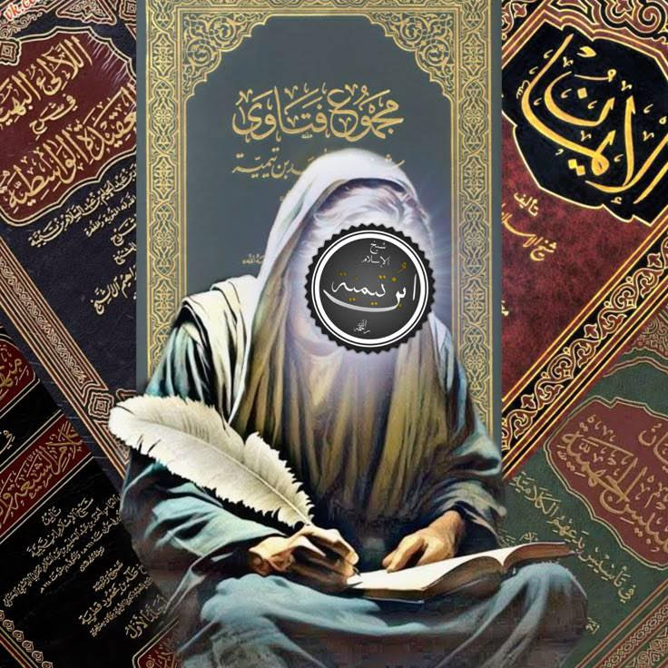

আশআরি-কালামি আকিদাহর লোকজন রাষ্ট্রীয় ক্ষমতাকে পুঁজি করে শাইখুল ইসলাম ইবনু…
২৪ ডিসেম্বর, ২০২৫
আশআরি-কালামি আকিদাহর লোকজন রাষ্ট্রীয় ক্ষমতাকে পুঁজি করে শাইখুল ইসলাম ইবনু তাইমিয়্যাকে (রাহ.) কারারুদ্ধ করার পরে দিমাশকের অলিগলিতে এই ঘোষণা দিচ্ছিল যে,
"যে বা যারা ইবনু তাইমিয়্যার আকিদাহ পোষণ করবে, তাকে হ ত্য| করা এবং তার মাল আত্মসাৎ করা বৈধ।"
[বিস্তারিত: ইবনু হাজার কৃত আদ্দুরারুল কামিনাহ—১/১৭১]
কালামিরা জুলম আর ফতোয়াবাজির মাধ্যমে নিশ্চিহ্ন করে দিতে চেয়েছিল। কিন্তু আল্লাহ'র ফজল ও করমে দিন যত যাচ্ছে, শাইখুল ইসলামের মর্যাদা, গ্রহণযোগ্যতা ও তাঁর অনুসারী ততই বৃদ্ধি পাচ্ছে, আলহামদুলিল্লাহ।
আশআরি-কালামি আকিদাহর লোকজন রাষ্ট্রীয় ক্ষমতাকে পুঁজি করে শাইখুল ইসলাম ইবনু তাইমিয়্যাকে (রাহ.) কারারুদ্ধ করার পরে দিমাশকের অলিগলিতে এই ঘোষণা দিচ্ছিল যে,
"যে বা যারা ইবনু তাইমিয়্যার আকিদাহ পোষণ করবে, তাকে হ ত্য| করা এবং তার মাল আত্মসাৎ করা বৈধ।"
[বিস্তারিত: ইবনু হাজার কৃত আদ্দুরারুল কামিনাহ—১/১৭১]
কালামিরা জুলম আর ফতোয়াবাজির মাধ্যমে নিশ্চিহ্ন করে দিতে চেয়েছিল। কিন্তু আল্লাহ'র ফজল ও করমে দিন যত যাচ্ছে, শাইখুল ইসলামের মর্যাদা, গ্রহণযোগ্যতা ও তাঁর অনুসারী ততই বৃদ্ধি পাচ্ছে, আলহামদুলিল্লাহ।
